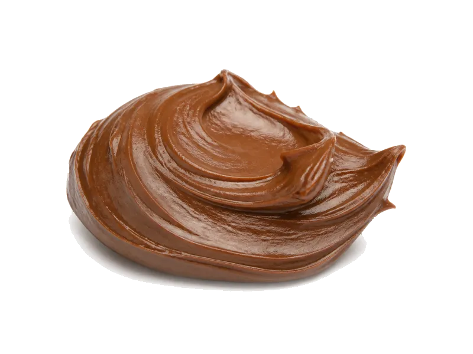

Słodycze i przekąski
Krem czekoladowy Milka
Krem czekoladowy Milka: 6 g białka, 534 kcal, 57 g węglowodanów i 31 g tłuszczu na 100 g. Kategoria: Słodycze i przekąski.
Kalorie534 kcalna 100 g
Białko / proteiny6 g
Węglowodany57 g
Tłuszcz31 g
Cena (szac.)~3,70 złza 100 g
Ceny zaktualizowano: sierpień 2026 (szacunek — ceny w popularnych supermarketach)
Porcja: łyżka (15g)
| Kalorie | 80 kcal |
|---|---|
| Białko | 0.9 g |
| Węglowodany | 8.5 g |
| Tłuszcz | 4.6 g |
| Cena (szac.) | ~0,60 zł |
Szczegółowe składniki odżywcze na 100 g
| Wartość energetyczna (kalorie) | 534 kcal |
|---|---|
| Białko (proteiny) | 6 g |
| Węglowodany | 57 g |
| Tłuszcz | 31 g |
| Tłuszcze nasycone | 11 g |
| Tłuszcze nienasycone | 20 g |
| Witaminy i minerały (skrót) | Miedź, Fosfor, Witamina B2 |
| Współczynnik kcal / 1 g białka | 89.0 |
| Cena produktu (szac. za 100 g) | ~3,70 zł |
| Cena za 100 g białka (szac.) | ~66,67 zł |
Witaminy i minerały na 100 g
Ilość w 100 g produktu oraz orientacyjny % dziennego zapotrzebowania (RDA) dla dorosłej osoby. Żelazo wg normy dla kobiet; sód jako % limitu. Wartości typowe (USDA / tabele żywieniowe / etykiety) — mogą się różnić między markami.
-
Witamina A 30 µg
-
Witamina E 0.5 mg
-
Witamina K 5 µg
-
Witamina B1 (tiamina) 0.09 mg
-
Witamina B2 (ryboflawina) 0.3 mg
-
Witamina B3 (niacyna) 0.9 mg
-
Witamina B5 0.6 mg
-
Witamina B6 0.07 mg
-
Witamina B9 (foliany) 10 µg
-
Wapń 190 mg
-
Żelazo 2.3 mg
-
Magnez 60 mg
-
Fosfor 205 mg
-
Potas 370 mg
-
Cynk 2.1 mg
-
Selen 4 µg
-
Miedź 500 µg
-
Mangan 0.5 mg
-
Sód 70 mg